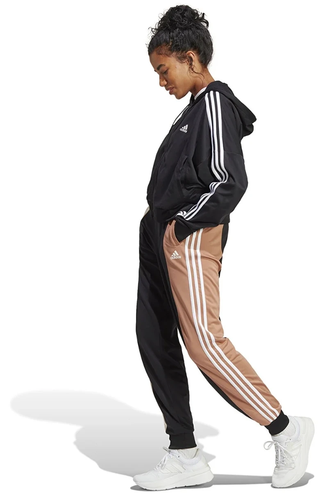
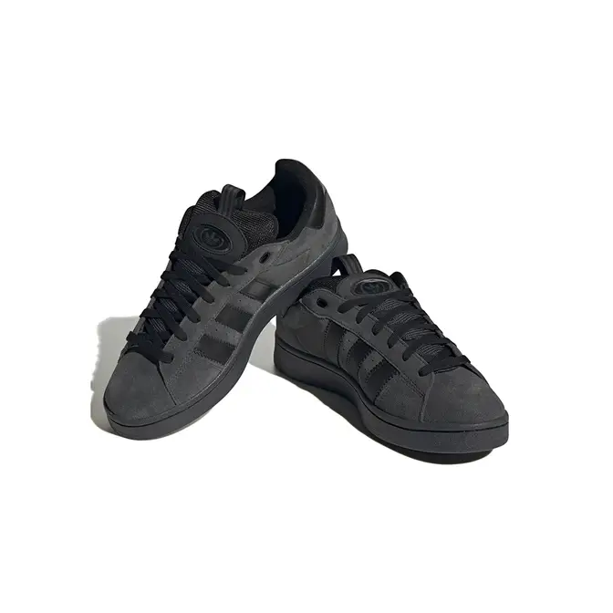
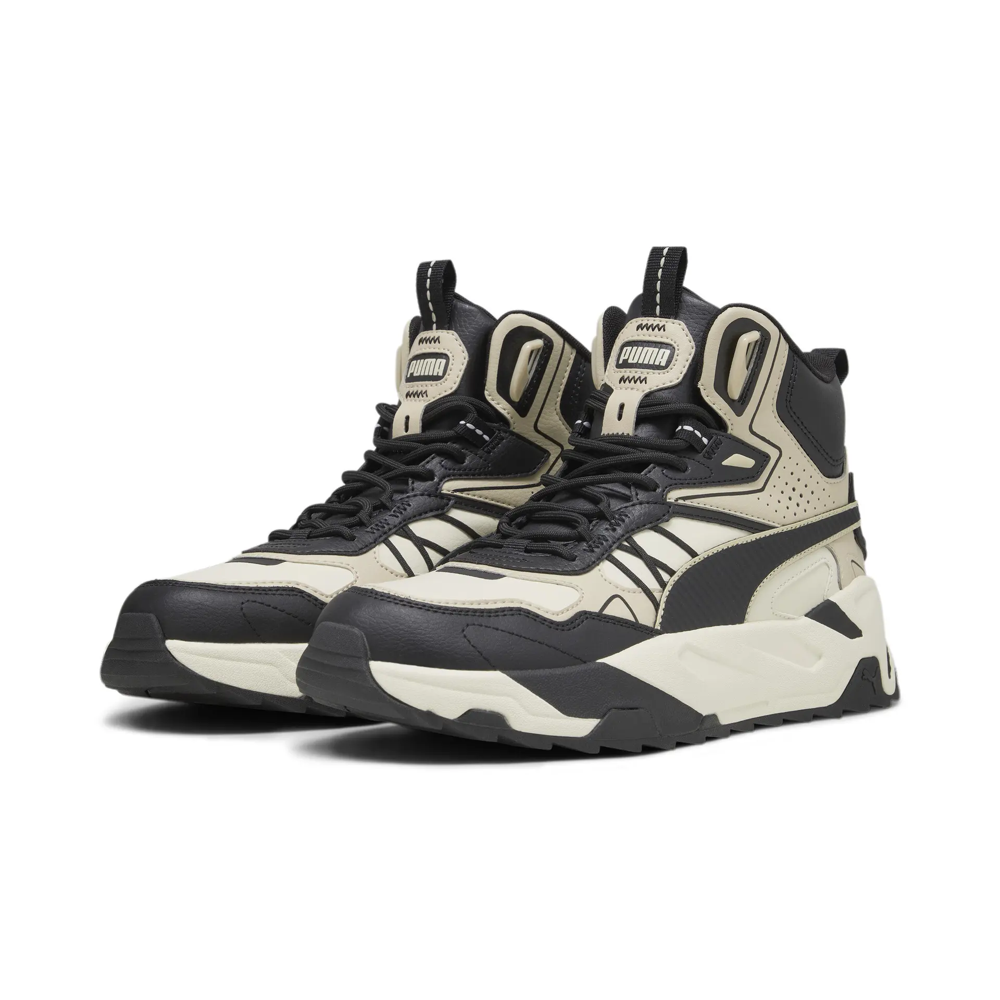
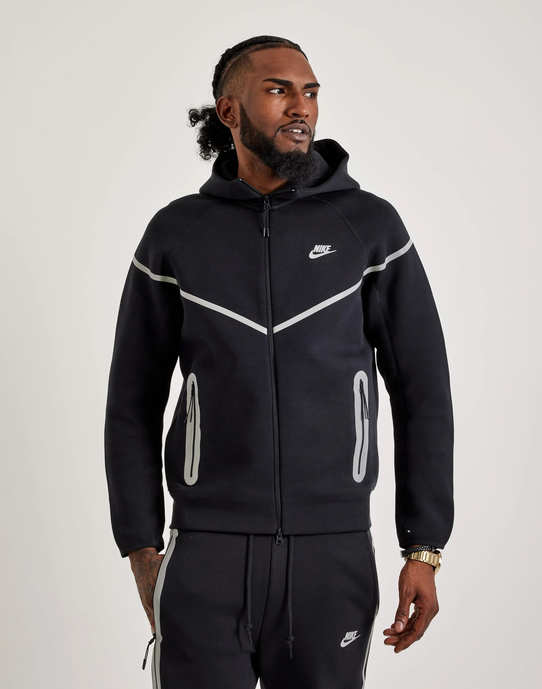
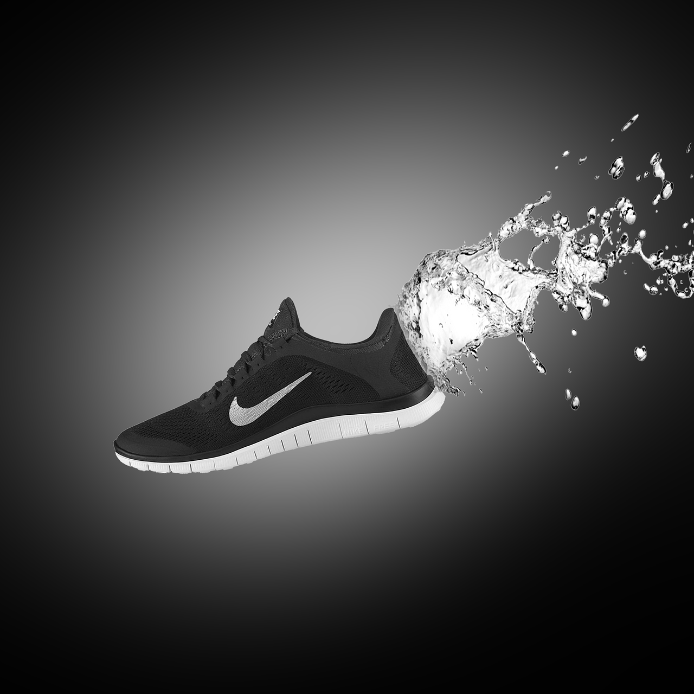
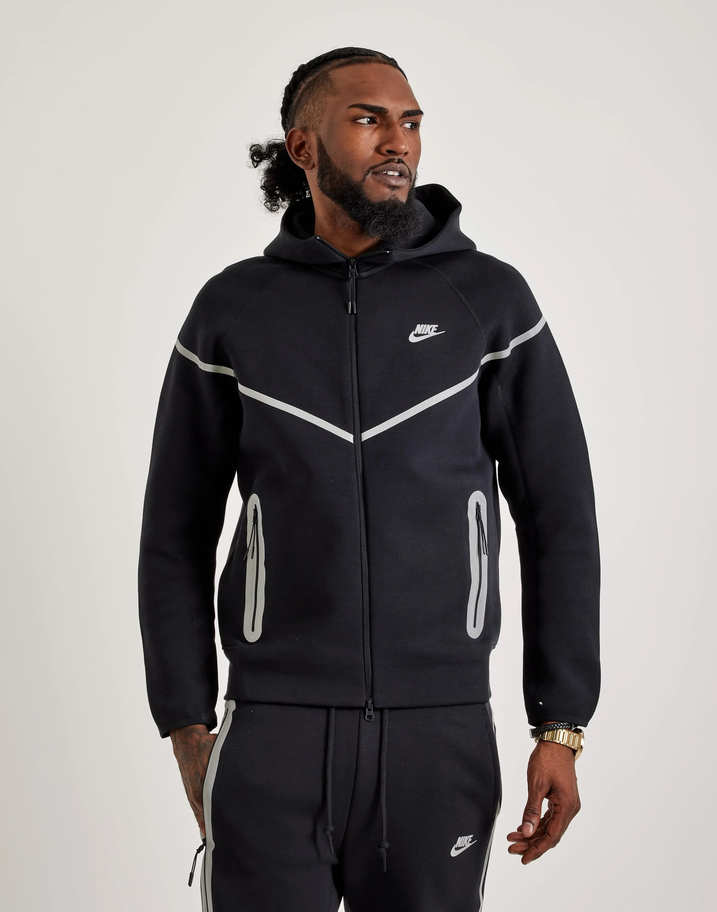
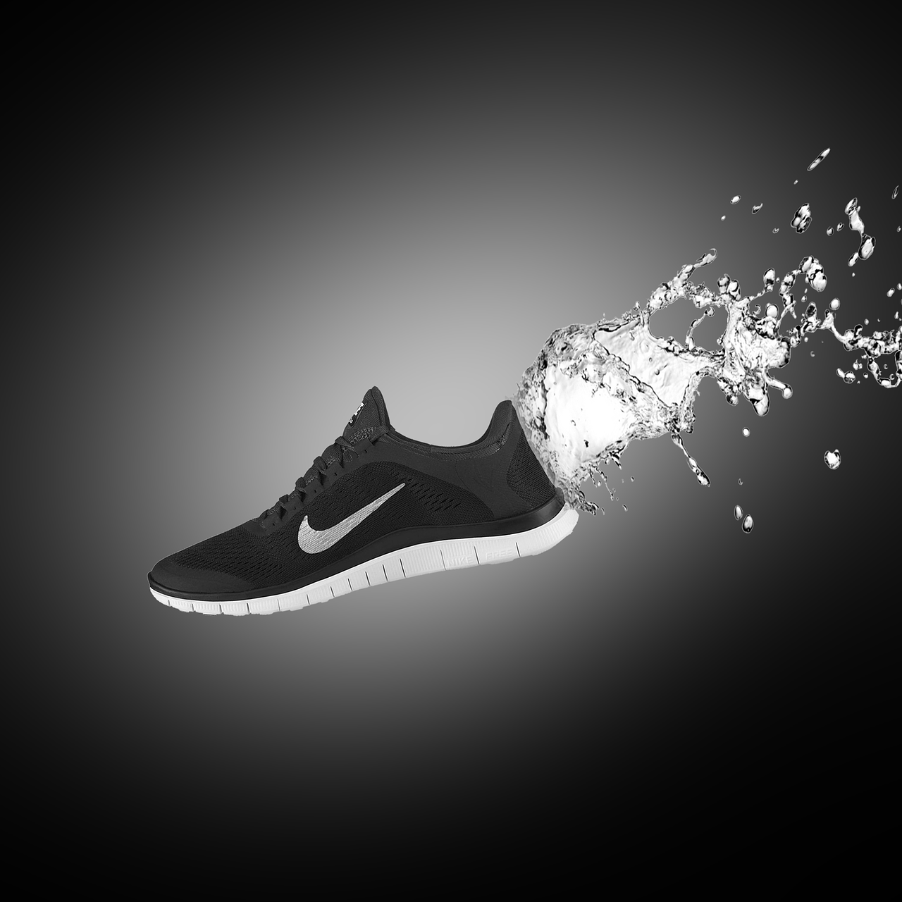
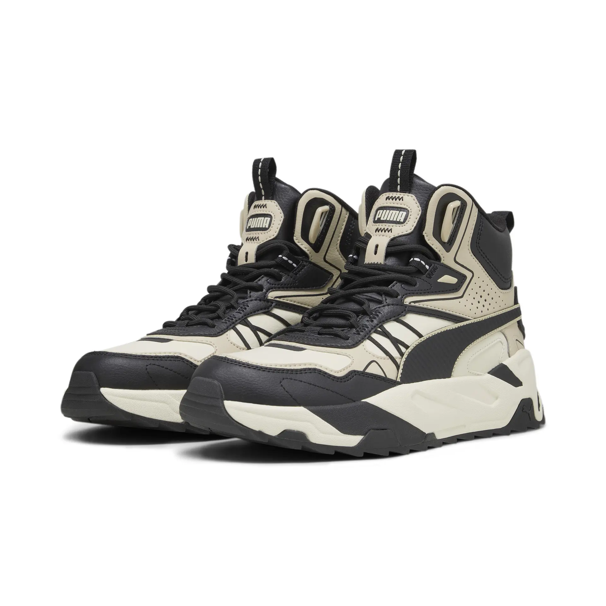
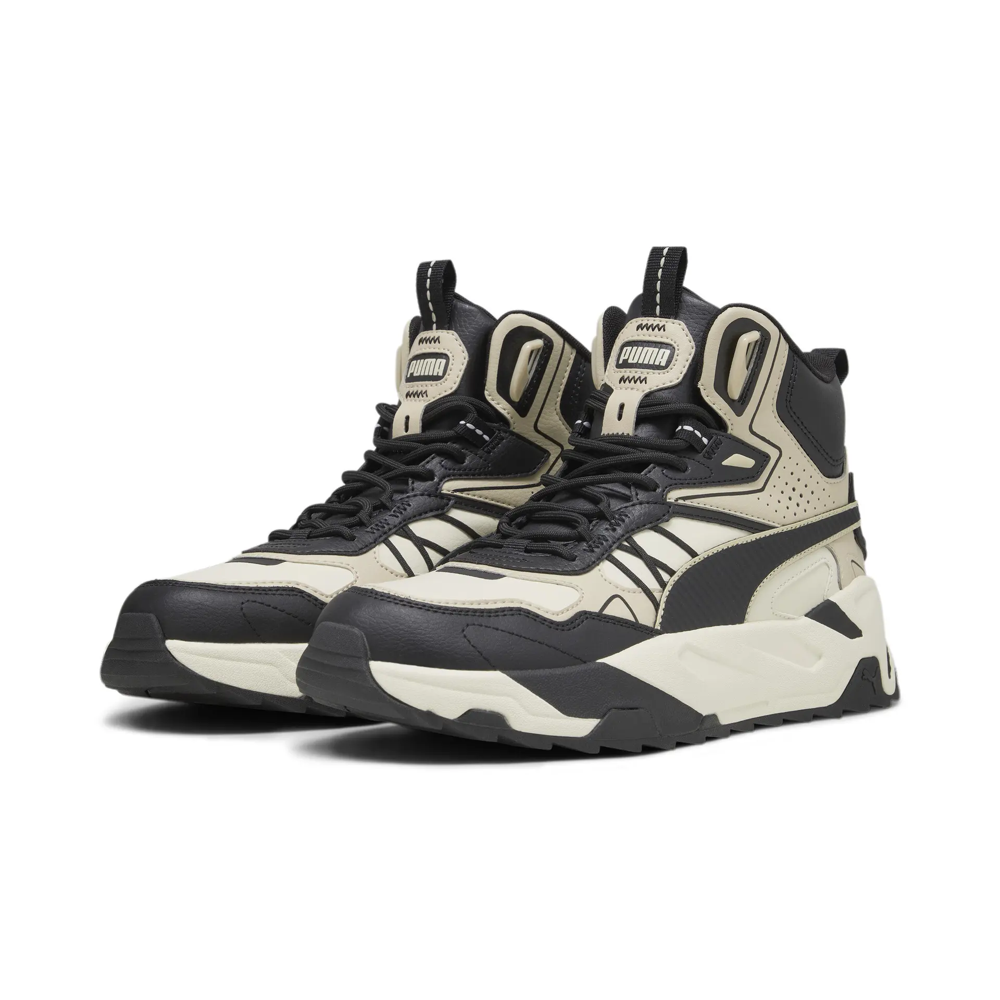

Despre Nike: Nike este unul dintre cele mai mari branduri globale de îmbrăcăminte și încălțăminte sportivă. Este cunoscut pentru inovațiile sale în tehnologia încălțămintei, inclusiv tehnologia Air Max și Flyknit. Nike este asociat cu performanța sportivă, stilul urban și influența asupra culturii streetwear.
Adidas


Despre Adidas: Adidas este un alt gigant global în industria sportivă, cunoscut pentru încălțămintea și îmbrăcămintea sa inovativă. Brandul este un simbol al performanței și al stilului, cu tehnologii precum Boost și Primeknit, și este implicat în numeroase colaborări cu sportivi și designeri.
Puma

Despre Puma: Puma este un brand de îmbrăcăminte sportivă cu o tradiție lungă, recunoscut pentru stilul său inovator și confortul produselor sale. Este asociat cu performanța sportivă, dar și cu moda urbană, colaborând cu diverse celebrități și influenceri pentru a crea produse exclusive.
 




 
